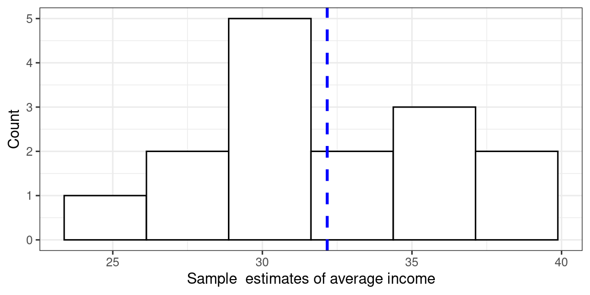
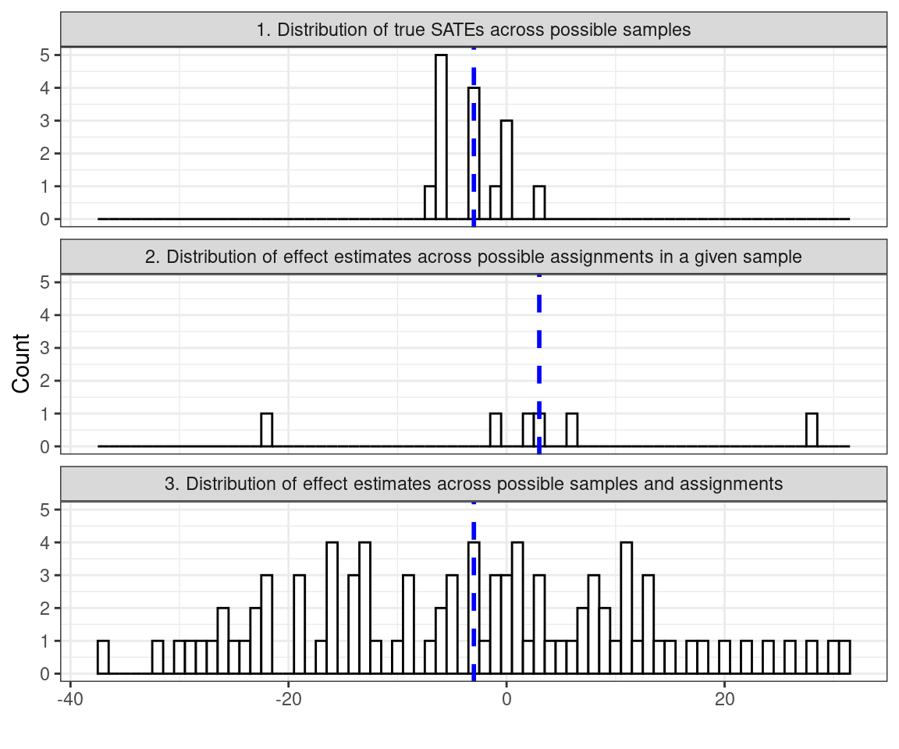

10 Things to Know About Sampling
Abstract
Researchers are rarely able to collect measurements on all units that make up the target population of a study. Time and budget constraints typically require the selection of a subset of units — a process called sampling. This guide provides an overview of different ways to sample and how these affect what can be learned from a study. Particular attention is paid to questions about sampling and randomized experiments.
What is random sampling?
Random sampling, also referred to as probability sampling, is one way of selecting a subset of units from a target population. The key characteristic of random sampling is that each unit in the population has a known and non-zero probability of being included in the sample. This goal is achieved by using some randomization mechanism — be it a coin flip, a random number table, or a computer program — to decide which units are going to be part of the sample.
To make matters concrete, suppose that our target population consists of six units: \[U = \{A, B, C, D, E, F\}.\] We would like to draw a random sample of four units from this population. There are 15 possible samples of this size that we may draw: \[ \begin{aligned} S_1 & = \{A,B,C,D\} & S_6 & = \{A,B,E,F\} & S_{11} & = \{B,C,D,E\}\\ S_2 & = \{A,B,C,E\} & S_7 & = \{A,C,D,E\} & S_{12} & = \{B,C,D,F\}\\ S_3 & = \{A,B,C,F\} & S_8 & = \{A,C,D,F\} & S_{13 }& = \{B,C,E,F\}\\ S_4 & = \{A,B,D,E\} & S_9 & = \{A,C,E,F\} & S_{14} & = \{B,D,E,F\}\\ S_5 & = \{A,B,D,F\} & S_{10} & = \{A,D,E,F\} & S_{15} & = \{C,D,E,F\}\\ \end{aligned} \] One procedure that would satisfy the definition of random sampling is to use statistical software to generate a random integer between 1 and 15 and to select the corresponding sample. It is easy to check that each unit is included in 10 of the 15 samples. Using this procedure, each unit thus has a probability of \(\frac{10}{15} = \frac{2}{3}\) of being sampled. Suppose we instead ask a colleague to arbitrarily choose four letters between \(A\) and \(F\) and include the corresponding units in the sample. This procedure would not satisfy the definition of random sampling: we would not know how often our colleague would pick each unit if we asked her to repeat the process many times; nor could we be sure that each unit would be picked with positive probability. Note that the selection probabilities need not be the same for all units for a sampling procedure to qualify as random. For example, the first unit may be sampled with a greater probability than all others. What matters is that each unit’s probability of being sampled is known to the researcher.
The core benefit of random sampling is that it makes it possible to draw inferences about the population based on the characteristics of one realized sample. For example, suppose we are interested in estimating the average income of the population and the population distribution of incomes among our six units is as follows:
| A | B | C | D | E | F | |
|---|---|---|---|---|---|---|
| Income (in 1000 USD) | 25 | 18 | 33 | 22 | 50 | 45 |
In this example, the average income in the population (in thousands of USD) is \[\mu = \frac{25 + 18 + 33 + 22 + 50 + 45}{6} \approx 32.\] Suppose that we draw a random sample of four units and use the average income in the sample as an estimate of the average income in the population. Since we are basing our estimation on the sample, a subset of the population, our estimate will not be identical to the average income in the population — it will differ. If we were to select the first of the 15 samples listed above, for example, our estimate would be \[\hat{\mu} = \frac{25 + 18 + 33 + 22}{4} = 25.\] The difference between the true parameter and our estimate \(\mu - \hat{\mu} = 32 - 25 = 7\) is referred to as sampling error — an error not because we have made a mistake, but because the estimate is not the same as the estimand, and sampling error because the difference occurs due to the fact that we are not observing the whole population. Yet, even though estimates based on a single realized sample are subject to sampling error, the process of random or probability sampling (in combination with the chosen estimation procedure) can ensure that our estimates do not have systematic error — our estimates will be neither too high nor too low across all possible random samples.

Figure @ref(fig:thebarplot) plots the distribution of income estimates that results from the 15 possible samples. This distribution is called the sampling distribution. As shown by the blue line, the average estimate across all possible sample estimates coincides with the true population parameter of approximately \(32\). In other words, if we were to repeat the sampling procedure many times and estimate the average income every time, we would be correct on average. Another way to say “correct on average” would be to say “not systematically wrong” — as can be see from the roughly symmetrical nature of the estimates in this figure. Of course, this fact alone tells us little about the extent to which we should trust an estimate that is based on only one realized sample. Fortunately, random sampling allows us (in most cases) to obtain estimates of the variability of the sampling distribution and thus of the precision of our estimates from a single sample.1 Typically, these uncertainty estimates take the form of standard errors that can be used to construct confidence intervals.
For example, we may calculate a 95% confidence interval for the average income. Even though we would not be certain that our particular sample confidence interval contains the true underlying population parameter, we would know that, were we to repeat the process of known random sampling and confidence interval creation many times, at least 95% of confidence intervals should contain the true population parameter.
What distinguishes random sampling and random assignment?
The core feature of both random sampling and random assignment is that units are selected from some larger pool with known probabilities between zero and one. Yet, there are several key differences. In random sampling, units are selected at random from a population in order to infer characteristics of the population from the sample. Random assignment, on the other hand, is used in experiments to allocate units from a pool of experimental subjects to experimental conditions — in the simplest case to a treatment and a control group. The goal of random assignment is to draw inferences about causal effects, typically an estimate of an average causal effect of the treatment on some outcome or a confidence interval or test relating to such causal effects (see “10 Strategies for Figuring out if X Caused Y” or “10 Things to Know About Hypothesis Testing” for details).2
The subject pool of an experiment may or may not be a random sample from a larger population. In many cases, experiments rely on convenience samples. Combining random sampling and random assignment, however, has important benefits. Suppose we first draw a random sample of units from a population and then randomly assign some of these units to receive a treatment. That we used random assignment to allocate units to experimental conditions enables us to obtain an unbiased estimate of the average treatment effect among the units in our sample. That we randomly sampled our units from the population means that we can use our estimate of the average treatment effect in the sample to draw inferences about the average treatment effect in the population. In other words, experiments that are based on random samples offer straightforward ways to learn not only about sample average treatment effects (SATEs) but also about population average treatment effects (PATEs). For more information on these and other types of treatment effects, see “10 Types of Treatment Effect You Should Know About”.
Another advantage of randomly sampling experimental units is that units who have not been sampled can serve as additional control units. To illustrate, consider again the population of six units from the stylized example above. Suppose we would like to conduct an experiment, but we only have research funds to measure outcomes for four units. Hence, we randomly sample, say, units A, B, C and E, and then randomly assign units B and E to treatment. In principle, the control group of our experiment consists of units A and C. Units D and F, however, by virtue of not being sampled, have also been chosen to not receive the treatment through a random process. Hence, they can be used as additional control group units should more funds for outcome measurement become available at a later stage.
How to obtain a random sample?
Obtaining a random sample is rarely as straightforward as the above description makes it seem. In practice, the survey population — the set of units for which data can realistically be collected — is often more restrictive than the target population. For example, the target population may consist of all adult residents of a country, but it may be infeasible to sample certain groups like prisoners or residents of areas with a difficult security situation.
The first step in random sampling is to acquire a sampling frame, a set of materials that are used to identify the units of the target population. In its simplest form, a sampling frame may be a list of units. Sampling frames are rarely perfect and tend to be one of the sources of differences between the target and survey population. Sampling frames may suffer from both undercoverage (units that are part of the target population are missing from the sampling frame) and overcoverage (the sampling frame includes units that are not part of the population). See Kish (1965, chap. 2) and Groves et al. (2009, chap. 3) for more on sampling frame issues and how to remedy them.
Depending in part on the nature of the sampling frame, there are different ways to randomly sample units. Many of these have analogues among the ways in which units can be randomly assigned to experimental conditions (see “10 Things to Know About Randomization”).
Simple Random Sampling
Simple random sampling is the most basic survey design. In this design, each sample of size \(n\) and hence each unit has the same probability of being sampled. One way of drawing a simple random sample of size \(n\) from a sampling frame with \(N\) units is to enumerate all possible samples of size \(n\) and randomly select one of those samples. This is the procedure described in the example above. However, this approach tends to be impractical in real world applications, since actual populations are typically much larger than \(N=6\), and the number of possible samples will thus be vast. An alternative procedure is to number all units from 1 to \(N\), to generate \(n\) random numbers, ideally after setting a random seed (like set.seed() in R), and to select the corresponding units.3
Stratification
Suppose we know upfront that the characteristic in which we are interested varies across sub-populations. For example, if we aim to estimate average income, we may suspect that men earn more than women. If we draw a simple random sample, it is possible that we end up with a sample that contains more women than men. In this case, our average income estimate will be subject to a large sampling error. A way to guard against this possibility is to divide the population into subgroups, also called strata, and draw an independent random sample in each stratum. For example, we may draw an independent random sample of women and and one of men. This procedure fixes the proportion of women and men in the sample, thereby avoiding “bad” samples and improving the precision of our estimates. Being able to ensure that the sample contains enough units from a particular sub-population is also helpful if estimates among the sub-population are of independent interest. If we would like to estimate the gender pay gap, for example, we need a sample that contains enough men and women to obtain sufficiently precise estimates of each group’s average income. This latter use of stratification is especially important for learning about rare subgroups.
Clustering
Suppose we would like to estimate the average income among residents of a city. Our sample frame may not identify individual residents but we may have access to a list of households. Instead of directly sampling residents, we can randomly select households and interview all members of the selected households. In this case, the primary sampling units — the units that can be selected — differ from the observation units on which measurements are taken. Households serve as PSUs or clusters, while household members serve as observation units. The core downside of cluster sampling is that it typically leads to a loss in precision. For an analogous problem with cluster random assignment and for more on clustering and information reduction see “10 Things to Know About Cluster Randomization”. This loss in precision will be greater when units within the same cluster are more similar to each other (for example, members of the same household may have similar incomes or views). This problem of similarity or dependence within clusters can be severe in studies of politics where all members of a place have the same representative or share similar attitudes (Stoker and Bowers 2002). Nonetheless, cluster sampling may be necessary if sampling frames of individual observation units cannot be obtained. Cluster sampling may also save survey costs. For example, suppose we would like to estimate household-level income. Using households as the primary sampling unit may lead to a sample of households that is dispersed throughout the city, which increases transportation costs. Instead, we may select entire city blocks and interview all households within the selected blocks. Doing so may make it possible to interview more households with a smaller budget. Whether or not the gain in precision from a bigger sample size outweighs the loss in precision from clustering will depend on the degree to which households within the same city block have similar incomes.
Multi-stage sampling
Instead of sampling all units in a cluster, one may draw a sub-sample of units. For example, instead of interviewing all members, one could sample two members in each sampled household. Additional stages can be added to this approach. For instance, we could first draw a sample of city blocks, then a sub-sample of households within each sampled city block and finally a sub-sample of household members within each sampled household. In this example, households would be referred to as secondary sampling units and household members as tertiary sampling units. One advantage of multi-stage sampling is that it allows researchers to navigate the trade-off between precision and cost-effectiveness. Increasing the number of clusters and sub-sampling fewer units per cluster can yield a more diverse sample and hence reduce sampling variability. Yet, doing so may also increase survey costs.
What to do if there does not exist an obvious sampling frame?
In many cases, an obvious sampling frame in the form of a list of units or clusters of units does not exist. In such cases, researchers often rely on some variant of multi-stage area sampling. For example, they may first randomly sample districts, then randomly select villages within districts, then households within villages and finally individuals within households. Lists of administrative units often exist at higher levels of aggregation, but the problem of non-existent frames kicks in for more fine-grained stages of the process. The advantage of the multi-stage approach is that sampling materials have to only be created for units that have actually been sampled. Mapping all households in a country, for example, may be infeasible. Doing so in the subset of villages in the sample, however, may be realistic.
Where the smallest administrative unit is still too large or otherwise inappropriate as a sampling unit, researchers have resorted to creating their own units. Scacco (2008), for example, mapped 120 original sampling units in order to randomly sample residents of two Nigerian cities. Similarly, Green, Wilke, and Cooper (2020) used satellite images to create circular sampling units that map onto the catchment areas of video halls in rural Uganda.
Irrespective of whether the next larger sampling unit was pre-existing or self-created, lists of households within those sampling units rarely exist. Two popular solutions to this problem are to use a random walk procedure or to conduct a household listing.
Random walk procedure. Enumerators are given (possibly randomly selected) starting points and are instructed to follow a walk pattern, e.g., “walk to the right and conduct an interview in every fifth dwelling.” The advantage of this approach is its cost effectiveness. No listing of households beyond those that enter the sample is required. Yet, a random walk procedure may not yield a particularly good approximation to a random sample. First, even though it is often treated as a way to select a simple random sample, a random walk procedure in fact introduces geographic clustering. The walk pattern above, for example, implies that neighboring houses can never both be sampled and that, once a particular household is sampled, the one five houses down the road will be sampled as well. See Lohr (2009, chap. 5.5) for more on the consequences of this kind of clustering. Second, even if starting points are, say, randomly chosen geo-coordinates, the probability of being sampled may vary across households due to geographic particularities (street layout, density of dwellings, etc). If selection probabilities are unknown to the researcher but correlated with the characteristic of interest, bias will result. Finally, a random walk procedure is difficult to implement in practice. That enumerators select households and conduct interviews in one step increases their incentives to informally replace households that are reluctant or unavailable — a practice that can only be detected through intensive monitoring.
Household listing. The more principled option is to create a list of all households in the sampling unit. Households can then be randomly selected from this list prior to the start of the survey. A listing exercise can be expensive, but is also more likely to allow the researcher to approximate a random sample. Sampling from a full list of households avoids problems of geographic clustering and unknown sampling probabilities. Moreover, separating the listing from the enumeration step makes it easier to guard against unwarranted replacements. At the listing stage, enumerators have fewer incentives to skip houses, since it is not yet clear whether a household will cooperate at the survey stage. That a record of all households within and outside the sample exists prior to the start of survey activities can also make it easier to detect instances in which enumerators interviewed the incorrect household. Finally, it is sometimes possible to re-use household lists to draw additional random samples in the future, at least in places where mobility is low. This feature opens up the possibility of sharing the costs of a listing exercise across multiple studies.
What to consider when putting a sampling strategy into practice?
The practical implementation of any sampling strategy typically presents numerous obstacles. Many unforeseen problems can occur and these are often context-specific. Hence, pre-testing one’s sampling strategy is at least as if not more important than pre-testing one’s questionnaire. Here are some examples of difficulties that one may be able to discover and address during a pre-test:
- The definition of a “dwelling” or “household” can vary across contexts. It is important to clarify the definition that should be used during the household listing stage. Say, for example, that parents and adult children live on the same property but in separate houses. Should enumerators list one or two households?
- Questions also tend to arise about the kinds of households that form part of the target (or survey) population. For instance, should rooms that are rented out to students who live there only during term time be included in the household listing?
- The ability to read maps among survey staff varies across contexts. Working with maps or satellite imagery may be impractical or require the identification of landmarks that survey staff can use to orient themselves.
- When sampling household members, these are often identified by gender and age (as invented by Kish 1965). In some contexts, households members may know neither their age nor birthday, in which case some other marker should be used.
In general, try to keep your sampling strategy simple. Sophisticated sampling strategies may offer gains in precision, but these gains will not be realized if a sampling strategy cannot be implemented as intended. Clear and simple instructions to survey staff are of crucial importance. It often helps to separate tasks and assign them to specialized teams. Sampling-related tasks such as listing households, drawing the sample of households, sampling household members and making appointments can be complex. Having separate teams for sampling and interviewing avoids overburdening enumerators and may allow for more in-depth training. See “10 Things to Know About Survey Implementation” for more on how to manage survey fieldwork.
How does one’s sampling strategy affect one’s analysis strategy?
Experimentalists are accustomed to the notion that one’s random assignment strategy affects one’s analysis strategy. Similar logics apply when it comes to sampling. Here are two common examples:
1. Weight by the inverse of a unit’s probability of being sampled if sampling probabilities vary across units. Let us denote the probability that unit \(i\) is included in the sample by \(\pi_i\). If we draw a simple random sample of size \(n\) from a population of size \(N\), every unit is included in the sample with the same probability of \(\pi_i = \frac{n}{N}\). Where sampling probabilities do not vary across units, the construction of unbiased estimators of population characteristics does not usually require the analyst to make use of sampling weights. In the stylized example of simple random sampling above, for instance, we used the unweighted sample average as an estimator for the average income in the population. Samples in which all units have the same probability of being sampled are thus also referred to as self-weighting (Lohr 2009, 40).
Things change if different units are sampled with different probabilities. For example, sampling probabilities may vary across strata. Say we stratify by gender and draw a sample of 100 men and 100 women, but there are 1000 men and 1500 women in the population. In this case, each woman has a probability of \(\pi_i = \frac{1}{15}\) of being sampled, while the sampling probability among men is \(\pi_i = \frac{1}{10}\). If gender is correlated with the characteristic of interest (as is likely the case for income), the unweighted sample average income will not give an unbiased estimate of the the population average income. The solution is to weight every unit by the inverse of its sampling probability:
\[\omega_i = \frac{1}{\pi_i}.\]
Men would thus receive sampling weights of \(\omega_m = \frac{1}{\pi_i} = 10\), while women receive sampling weights of \(\omega_w = \frac{1}{\pi_i} = 15\). Sampling weights can also be interpreted as the number of population units represented by each unit in the sample. In this example, each man in the sample represents himself and 9 other non-sampled men, while each woman represents herself and 14 other non-sampled women.
The same logic applies if the population parameter that one seeks to estimate is the average causal effect of a treatment. Experimentalists commonly use inverse-probability weights to obtain unbiased estimates of the SATE if the probability of being assigned to treatment varies across units (see “10 Things to Know About Randomization”). If the experimental subject pool is a random sample from a larger population and the target of inference is the PATE, researchers may also want to weight by the inverse of a unit’s probability of being sampled. See Miratrix et al. (2018) for more on the usage of sampling weights in the estimation of PATEs.
Note also that stratification is not the only possible source of variation in sampling probabilities across units. For example, such variation commonly results from multi-stage sampling, as in the case where one household member is sampled in every household but households are of varying size.
2. Adjust your estimates of sampling variability for clustered sampling. A common mistake is to analyze a clustered sample as if it was a simple random sample. Clustering increases sampling variability if units within clusters are similar in terms of the characteristic of interest. Researchers need to make sure that their uncertainty estimates reflect this additional variability. Suppose again that we seek to estimate average household income in a city. We randomly sample city blocks of 10 households each. If all city blocks have the same probability of being sampled, the unweighted average of household incomes in our sample will remain an unbiased estimator for the city-wide average household income. To estimate the variance of this estimator, however, we need to consider how incomes vary between city blocks rather than between households. See Lohr (2009, chap. 5) for details and for additional ways in which one may have to adjust one’s analysis strategy if clusters are of unequal size.
Again, the logic extends to cases in which the target of inference is a PATE. In randomized experiments, researchers often need to adjust their uncertainty estimates to reflect the additional variability induced by cluster random assignment (see “10 Things to Know About Cluster Randomization”). If the experimental subject pool is a random sample from a larger population, however, researchers may have to adjust for clustering at a level higher than that of treatment assignment if sampling was clustered at higher levels (Abadie et al. 2017).
How to take into account variability from both random sampling and random assignment?
If the units in an experiment are a random sample from a larger population, then our realized estimate of the effect of a randomized treatment on the population may deviate from the true PATE for two reasons:
- We have drawn one of many possible samples instead of performing our analysis on the entire population.
- We cannot observe all potential outcomes and have therefore chosen one of many possible ways to assign units to treatment and control conditions.
| Y0 | Y1 | Y1 - Y0 | |
|---|---|---|---|
| A | 25.00 | 27.00 | 2 |
| B | 18.00 | 8.00 | -10 |
| C | 33.00 | 13.00 | -20 |
| D | 22.00 | 24.00 | 2 |
| E | 50.00 | 53.00 | 3 |
| F | 45.00 | 50.00 | 5 |
| Average | 32.17 | 29.17 | -3 |
To illustrate, consider again our example population of six units. Suppose we would like to estimate the average effect of some treatment on income among people in this population. The table above displays two potential outcomes for each unit — a unit’s income level if that unit was assigned to control (\(Y0\)) and a unit’s income level if the unit was was assigned to treatment (\(Y1\)). The last column displays the true treatment effect for each unit. The average effect of the treatment among the six units in the population is \(-3\). Suppose that, in order to estimate this effect, we first randomly sample four of the six units, then randomly assign two of the four sampled units to treatment and finally compute the difference in mean outcomes across treatment and control.

The first panel in Figure @ref(fig:samplingdistributions) plots the distribution of the true average effect of our treatment across the 15 possible samples of four units that we may draw. In constructing this distribution, we presume that we can observe both potential outcomes among the four randomly sampled units. We thus suppress uncertainty that comes from the process of random assignment and focus on sampling uncertainty alone. Since we draw our samples randomly, the distribution of SATEs is centered on the true PATE of \(-3\). Among any given sample, however, the average effect of the treatment may be larger or smaller than the PATE.
The second panel of the figure considers one realized sample of four units. There are six possible ways of randomly assigning two out of four units to treatment. For the particular sample considered in panel 2, these six possible random assignments yield the shown distribution of possible treatment effect estimates. In constructing this distribution, we have ignored sampling uncertainty and focused solely on uncertainty that comes from randomization. Since we randomly assign units to treatment and control, the distribution is centered on the true average effect of the treatment in this sample. Yet, this SATE differs from the PATE.
Since there are 15 possible samples and six ways of randomly assigning treatment within each sample, there are \(15 \times 6 = 90\) possible estimates that may result in our hypothetical study. Panel 3 of the figure plots the distribution of all possible effect estimates, taking into account both uncertainty from sampling and from random assignment.
If we would like to make inferences to population quantities, our uncertainty estimates should reflect both kinds of uncertainty. If we use permutation-based randomization inference to calculate \(p\)-values to test sharp null hypotheses, for example, we only consider variability that stems from the random assignment of units to treatment and not from the sampling of units itself. If we use a bootstrap-based random sampling inference, we will tend to ignore the uncertainty arising from random assignment. One could combine both bootstrap re-sampling and randomization-justified permutations to reflect the two sources of uncertainty, although this might be computationaly complex and time consuming. Alternatively, the standard Neyman estimator of the variance of the difference-in-means estimator produces standard errors that are conservative if we presume that all uncertainty comes from random assignment. These standard errors will provide unbiased variance estimates if we can conceive of the experimental subject pool as a random sample from a population that is infinite. This assumption seems plausible when the experimental subject pool is a random sample that is small relative to the population. Where the size of the experimental sample is large relative to the population, Neyman standard errors will be conservative as well. See Aronow et al. (2014) and Abadie et al. (2020) for more on how to obtain unbiased variance estimates when sampling from a finite population.
How can sampling help with problems of non-response?
Non-response — the inability to obtain measurements for some units in the sample — is a common problem. Where non-response is not random, it has the potential to introduce bias, because it essentially undoes the random selection of units from the population. Hansen and Hurwitz (1946) were the first to propose two-phase sampling, also called double sampling, as a way to deal with non-response that requires minimal additional assumptions. The basic approach works as follows. First, draw a random sample of size \(n\) from a population and conduct a relatively inexpensive first attempt to obtain measurements for all \(n\) units in the sample. This first measurement phase may consist of, say, a phone survey. Let \(n_R\) be the number of units for which measurements can be obtained during this first phase and \(n_M\) the number of units for which measurements remain missing. Second, take a sub-sample of \(x\%\) of the \(n_M\) missing units and make intensive efforts to obtain measurements on all units of the sub-sample. For example, this second phase may consist of in-person interviews. If all responses in the sub-sample can be obtained, the following provides an unbiased estimator of the population average
\[\hat{\mu} = \frac{n_R}{n} \hat{\mu}_R + \frac{n_M}{n} \hat{\mu}_M,\]
where \(\hat{\mu}_R\) is the sample average among the original respondents and \(\hat{\mu}_M\) the sample average among the sub-sample of non-respondents. See Lohr (2009, chap. 8.3) on how to estimate the variance of this estimator.
The two-phase sampling approach is based on the core insight that concentrating efforts on a randomly selected sub-sample of non-respondents and obtaining responses from all of them is more helpful than attempting to obtain responses from all non-respondents which is bound to result in leftover missingness. Hansen and Hurwitz (1946) provide results on the optimal size of the original and follow-up sample given parameters such as the probability of non-response in the first phase and the cost of initial and follow-up data collection efforts. Coppock et al. (2017) show how two-phase sampling can be combined with worst case bounds to partially identify average treatment effects in randomized experiments. They generalize the approach by allowing for non-response not only in the initial but also in the follow-up sample.
How to sample difficult-to-reach populations?
Populations that are rare or stigmatized are difficult to study through random sampling. Classic examples include injecting drug users and sex workers. Sampling frames are not generally available for populations of this kind and a random sample of the general population is likely to contain only few of their members. Respondent-driven-sampling (RDS) has emerged as one prominent solution to this problem.4
RDS makes use of social network ties that link members of the target population. The sampling process starts with an initial non-random sample. Initial respondents are given a fixed number of coupons which they can hand out to their contacts in the target population. In subsequent sampling waves, respondents are recruited through the coupons that are given to them by respondents in the previous wave. Typically, respondents are compensated for every additional respondent whom they recruit. The idea is that the influence of the initial non-random sample can be reduced by conducting many successive waves of sampling.
RDS does not yield a true random sample, because sampling probabilities remain unknown. In practice, researchers use various models to approximate the sampling process when estimating the population parameters of interest. The simplest model conceives of the sampling process as a random walk where each respondent randomly chooses among her contacts in the target population when recruiting for the next wave (see Gile and Handcock 2010). This model implies that respondents’ unconditional probabilities of being sampled are proportional to their number of network ties. This number can be elicited as part of the survey process and then used for weighting in the estimation process.
This model is known to be false in many ways. For example, it presumes sampling with replacement, i.e., the model does not take into account that a respondent who has been sampled in a previous wave cannot be sampled again. Gile et al. (2018) describe a range of subsequent approaches that seek to relax this and other assumptions.
What else to consider when designing a sampling strategy for a randomized experiment?
In many cases, randomized experiments do not rely on random samples from a larger population. Yet, even if experimental subjects are sampled in non-random ways, there are important considerations to take into account when designing a sampling strategy.
Symmetry. First and foremost, the chosen sampling strategy should maintain symmetry across treatment and control groups. Suppose an experiment evaluates the effect of community meetings. Selecting respondents from a radius around the community hall where the meetings took place sounds like a natural approach. Yet, this sampling strategy requires that community halls in which meetings would have taken place if the village had been assigned to treatment can be identified in control villages. Otherwise, it is not possible to implement the same sampling strategy in treatment and control villages. Where the way in which units have been sampled differs across treatment and control groups, it remains unclear whether observed differences in outcomes across these groups can be attributed to effects of the treatment or to differences in how units were sampled. This problem is called an exclusion restriction violation (see Gerber and Green 2012 for more discussion and examples of this assumption and possible violations). One way to avoid exclusion restriction violations of this kind is to identify all units on which measurements will be taken prior to random assignment.
Spillovers. Researchers often worry that effects of a treatment may spill over to proximate units, especially if the units in an experiment are connected through network ties. Considering the presence of spillovers when selecting one’s experimental subject pool may make it possible to rule out or control spillovers by design. For example, when sampling villages or households, one may impose a minimum distance between units in the sample in order to limit interactions among residents from different experimental units.
Desired covariate profiles. There are many reasons to purposefully sample units with particular covariate profiles. Maybe the SATE among a specific subgroup is of particular theoretical interest. Sampling particular kinds of units may also help generalize experimental results beyond the setting in which they were obtained, even if units have not been randomly sampled from a population. Pearl and Bareinboim (2014) and Tipton (2013) show how treatment effect estimates may be “transported” to some other setting by calculating weighted averages of estimates within subgroups. This approach is based on theoretical assumptions about which and how differences between study and target settings relate to the treatment effect of interest. Crucial for the ability to use this strategy is that the subject pool in the study setting contains enough units in each relevant subgroup to estimate treatment effects within it.
References
Footnotes
While only random sampling allows for the characterization of sampling uncertainty, random sampling does not guarantee the ability to obtain uncertainty estimates (see Kish 1965, 24 for a discussion). A design that samples only one cluster at random, for example, would not allow for the construction of standard errors and confidence intervals.↩︎
On a deeper level, however, random assignment has much in common of with random sampling. The process of randomly assigning units to a treatment group can be thought of as a process of drawing a random sample of treated potential outcomes in order to estimate the average treated potential outcome in the entire experimental subject pool (Neyman 1990). ↩︎
Note that when talking about random assignment, we refer to the analogous procedure that assigns a fixed number of units to treatment with a a given probability as complete random assignment. The term simple random assignment refers to a procedure where the researcher, say, flips a coin for every unit to decide whether it should be assigned to treatment or control. The number of units assigned to treatment under simple random assignment thus remains a random variable. ↩︎
See Lohr (2009, chap. 14) for an overview of other approaches and Tran et al. (2015) for a comparison of RDS to time-location sampling as a major alternative.↩︎